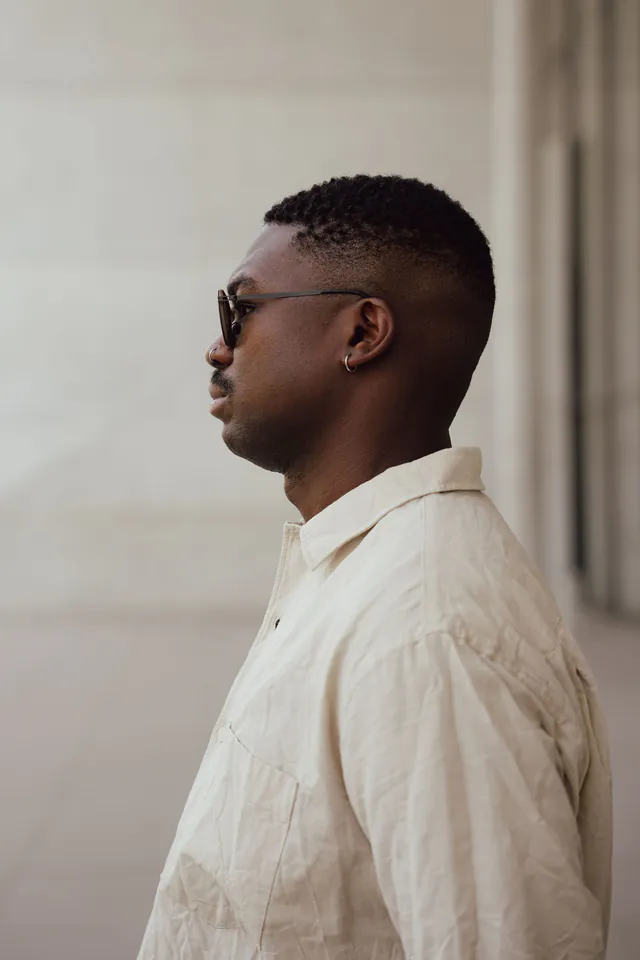

DJ in Heidelberg
Du heiratest mit Blick auf das Schloss, feierst ein Institutsjubiläum oder planst den Sommerabend deines Teams am Neckar? Benji Holiday kommt aus München zu dir und bringt einen Open-Format-Sound mit, der Studierende, Professorinnen und Großeltern gleichermaßen abholt.
Resident-Erfahrung: Rote Sonne · Bob Beaman · Harry Klein

Gemischtes Publikum, ein Sound für alle
Wer in Heidelberg feiert, hat selten ein homogenes Publikum. Die Stadt beherbergt die älteste Universität Deutschlands, gegründet 1386, und zieht seit Jahrhunderten Menschen aus aller Welt an. Auf einer Hochzeit sitzen deshalb oft Gäste aus drei, vier Ländern am Tisch, auf einer Institutsfeier treffen Doktorandinnen auf emeritierte Professoren. Genau für solche gemischten Runden ist ein Open Format DJ gemacht: kein starres Genre, sondern ein Abend, der sich nach den Menschen im Raum richtet.
Benji Holiday hat sein Handwerk in Münchner Clubs wie der Roten Sonne, dem Bob Beaman und dem Harry Klein geschärft. Dort lernt man schnell, eine Tanzfläche über Stunden zu lesen. Dieselbe Aufmerksamkeit bringt er zu dir an den Neckar, rund 330 km von seinem Münchner Standort entfernt.
Hochzeiten zwischen Schloss, Altstadt und Weinbergen
Die Schlossruine über der Altstadt, die Alte Brücke und der Blick vom Philosophenweg machen Heidelberg zu einer der beliebtesten Hochzeitskulissen im Südwesten. Viele Paare reisen dafür extra an, weil sie hier studiert haben oder sich hier kennengelernt haben. Gefeiert wird dann in historischen Sälen der Altstadt, in Locations am Fluss oder auf einem Weingut an der Bergstraße.
Für Benji bedeutet das: Er plant den Abend als Bogen. Leise, warme Musik zum Sektempfang, ein Dinner, bei dem man sich noch unterhalten kann, dann der Moment für den Eröffnungstanz und schließlich die Party. Deine Wunschsongs bekommen ihren festen Platz, und was auf der No-Go-Liste steht, läuft nicht. Auch dann nicht, wenn Onkel Klaus dreimal fragt.
Akademische Feiern und Firmenevents
Neben der Universität prägen zahlreiche Forschungseinrichtungen und Unternehmen der Rhein-Neckar-Region das Bild der Stadt. Daraus entstehen ganz eigene Anlässe: Jubiläen von Lehrstühlen, Abschlussbälle, Sommerfeste von Instituten oder Konferenzabende mit internationalen Gästen. Hier zählt vor allem Timing. Während Reden und Ehrungen bleibt die Musik im Hintergrund, danach darf es lauter werden. Für Unternehmen mit Markenanspruch bringt Benji außerdem Erfahrung von Events für Lacoste, Philipp Plein und BOSS mit.
Ehrlich zur Entfernung
Heidelberg ist kein Nachbarort von München, und das soll auch niemand schönreden. Die Anfahrt wird nach Kilometern berechnet, bei Abend-Events kommt gegebenenfalls eine Übernachtung dazu. Beides weist Benji vorab transparent im Angebot aus, damit du die Gesamtkosten kennst, bevor du dich entscheidest.
Faire, klare Preise
Detaillierte Aufschlüsselung auf der DJ-Übersicht.
DJ in Heidelberg — gut zu wissen
Heidelberg ist über 300 km von München entfernt. Wie rechnest du die Anreise ab?
Die Strecke liegt bei rund 330 km. Ich berechne die Anfahrt mit 0,35 €/km ab München. Endet die Feier spät in der Nacht, kommt gegebenenfalls eine Übernachtung dazu. Beides steht vorab schwarz auf weiß im Angebot, bevor du irgendetwas zusagst.
Unsere Hochzeitsgäste reisen aus mehreren Ländern an. Kannst du darauf eingehen?
Ja. Als Open Format DJ mische ich deutsche Klassiker, internationale Hits und Songs aus den Herkunftsländern eurer Familien. Im Vorgespräch sammeln wir Wunschtitel und eine No-Go-Liste, Ansagen mache ich auf Wunsch auf Deutsch oder Englisch.
Spielst du auch bei Jubiläen von Instituten oder bei Abschlussfeiern?
Gern. Bei akademischen Anlässen gibt es meist einen offiziellen Teil mit Reden und Ehrungen. Dort halte ich mich musikalisch zurück und baue die Tanzfläche erst danach auf. Den Ablauf stimmen wir vorher mit den Organisatoren ab.
Die Location liegt in der Altstadt und ist schwer anzufahren. Ist das ein Problem?
Nein, aber es gehört in die Planung. Ich frage vorab nach Zufahrt, Ladezone und Aufbauzeit, damit Anlage und Licht pünktlich stehen. Bei engen Gassen oder Treppen plane ich entsprechend mehr Zeit für den Aufbau ein.
Kannst du auch eine Feier auf einem Weingut im Umland übernehmen?
Ja. Ob Weingut, Scheune oder Gartenlocation im Rhein-Neckar-Raum: Ich kläre vorab Stromanschluss, Wetterschutz und mögliche Lautstärkegrenzen mit dem Gastgeber, damit der Abend draußen wie drinnen funktioniert.